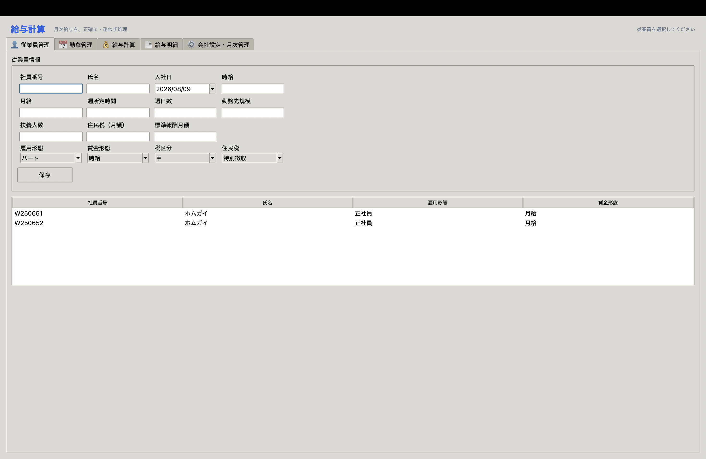
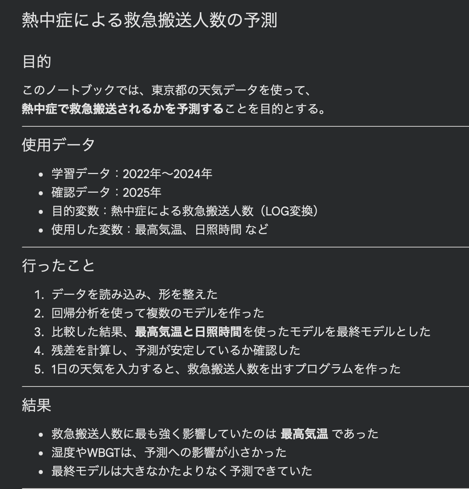
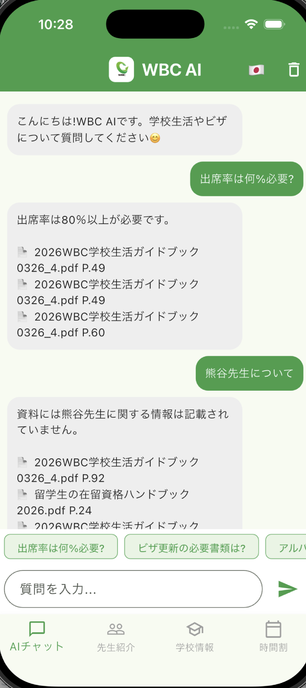
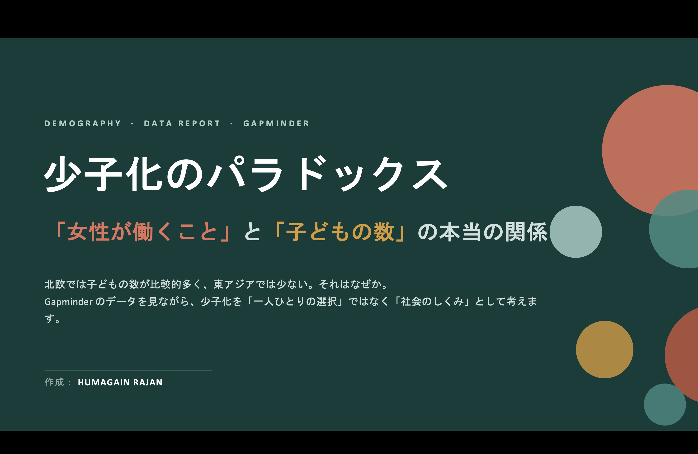
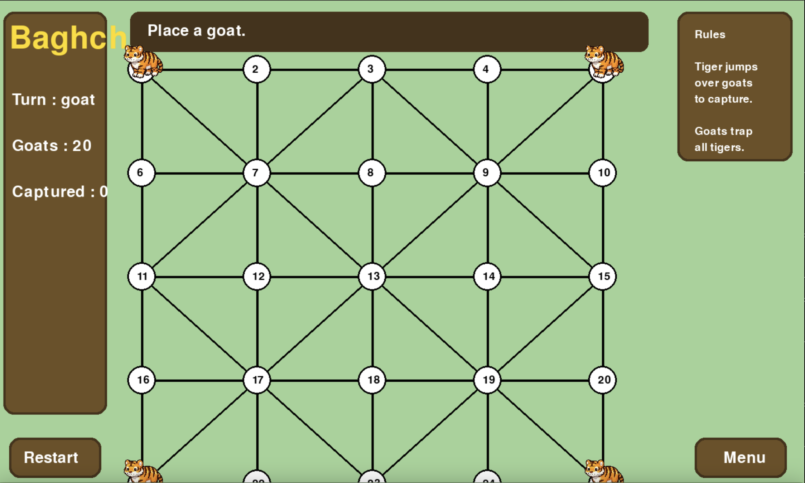

💰
01
DESKTOP APPLICATION
給与計算アプリ
Salary Calculator
勤務時間や残業、深夜勤務、休日勤務などの条件を 考慮して給与を計算できるデスクトップアプリを制作しました。
DATA × TECHNOLOGY × CREATIVITY
ホムガイ・ラジャン
データ分析やAIなどの技術を学びながら、 実際の課題をテーマにしたプロジェクト制作に 取り組んでいます。
01 / ABOUT
日本でIT・データサイエンスについて学んでいます。
分からないことでも、調べ、試し、改善することを 繰り返しながら、自分のアイデアを実際のWebサイトや アプリケーションとして形にすることに取り組んでいます。
特に、データを使って問題を分析したり、 新しい技術を活用して、 「どうすればもっと良くできるか」を考えることに 興味があります。
AIを単なる答えを出すためのものとして使うのではなく、 理解を深め、考え、検証し、 より良い結果を作るためのツール として活用しています。
02 / APPROACH
何を作りたいのか、 何が問題なのかを考える。
必要な情報や技術について調べる。
実際に作り、動かしてみる。
結果や仕組みを深く理解する。
結果を確認し、 必要に応じて修正する。
自分で判断した内容を 実際の作品として形にする。
03 / PROJECTS

DESKTOP APPLICATION
Salary Calculator
勤務時間や残業、深夜勤務、休日勤務などの条件を 考慮して給与を計算できるデスクトップアプリを制作しました。

DATA SCIENCE
Heatstroke Ambulance Prediction System
東京都の気象データと熱中症救急搬送データを分析し、 2022～2024年のデータを学習に使用して 2025年の搬送人数を予測・検証しました。 さらに、現在の気象条件から搬送人数を推定できる 予測システムへ発展させました。

AI APPLICATION
留学生向けAIスクールアシスタント
学校案内やビザ関連のPDF資料を検索・参照し、 留学生が必要な情報を質問形式で取得できる AIアシスタントを制作しています。

DATA ANALYSIS
世界の長期データ分析
GDP、平均寿命、出生率、乳幼児死亡率などの 長期的な世界データを比較し、 経済・健康・人口の関係を分析しました。

AI / COMPUTER VISION
AI Security System
カメラを利用した顔認証などを組み合わせ、 認証結果に応じてシステムを動作させる セキュリティシステムを制作しました。

GAME DEVELOPMENT
Pythonを使ったネパールの伝統ゲーム
ネパールの伝統的なボードゲーム「Baghchal」を Pythonでデジタルゲームとして制作しました。 ゲームルールやプレイヤー操作、勝敗判定などを実装しました。
04 / SKILLS
課題を整理し、調べ、試し、改善しながら 解決方法を考えることを大切にしています。
目的や条件を整理し、 AIから必要な情報やアイデアを得るために プロンプトを考え、改善しています。
データを整理・可視化し、 そこから傾向や特徴を見つけ、 結果について考察することに取り組んでいます。
AIや学んだ技術を活用しながら、 自分のアイデアをWebサイトや アプリケーションとして形にしています。
分からないことを調べ、AIも活用しながら 実際に試すことで、新しい知識や技術を 少しずつ身につけています。
TECHNOLOGIES I HAVE USED
※ これらは、これまでの学習・プロジェクト制作の中で 使用・学習した技術です。
05 / GOAL
自分で考えて問題を見つけ、
より良い方法を考え、
実際の形にできる人材へ。
AIやデータサイエンスなどの新しい技術を学びながら、 単に技術を使うだけではなく、自分で考えて問題を見つけ、 より良い方法を考え、実際の形にできる人材を目指しています。
AIにすべてを任せるのではなく、 AIを活用して理解を深め、結果を確認し、 自分自身で判断することを大切にしています。
06 / CONTACT
Thank you for visiting my portfolio.
ご覧いただきありがとうございます。